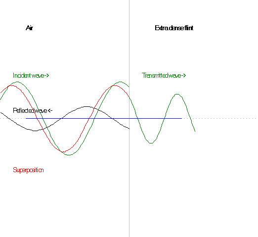

Above, you see an electromagnetic wave falling perpendicularly onto flint glass. This flint glass has a very high index of refraction: n = 1.959 at 20°C and l = 486.1 nm.
Exercise 21:
According the law of refraction, the wavelength changes when light passes from one material to another. Indeed, this is the cause of refraction. Measure the wavelength on the illustration for each material and show that their ratio equals the ratio between the indices of refraction of the two materials.
When light is reflected from a medium with a greater index of refraction, the amplitude of the reflected wave is given through r = a·(n1 - n2)/(n1+n2), where a is the amplitude of the incident wave.
Calculate r/a in the case where material 1 is air, i.e. n1=1 and material 2 is flint glass with n2=1.959.
What does it imply that r/a is negative?
The intensity of an electromagnetic wave is proportional to the square of the amplitude, and the reflectance r2 is the ratio of the intensities of the reflected and the incident wave.
Find the reflectance r2 as a function of the refractive indices of the two mediums.
Calculate the reflectance if medium 2 is water.